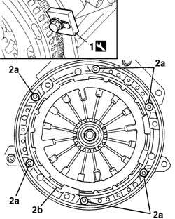
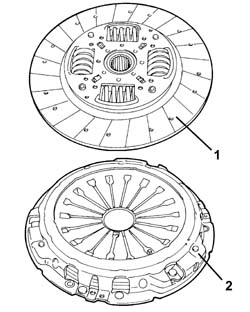
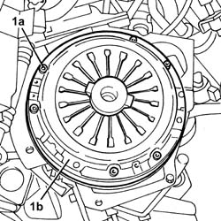
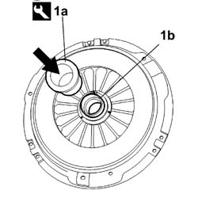
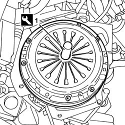

1810A24 CLUTCH - R + R WITH GEARBOX REMOVED
- Path
- Procedures > 18 CLUTCH UNIT > 1810 CLUTCH MECHANISMS > 1810A CLUTCH MECHANISM > 1810A24 CLUTCH - R + R WITH GEARBOX REMOVED
- Kind
- repair procedure (removal / refitting; the operation number is the code)
- Applies to
- all engines; all production periods
- Interactive page
- https://sloeber94.github.io/elrnDB-fUlss/en/#/179007218
Applies to: engines: 2.0 16v; all production periods
 Removing
Removing
 Refitting
Refitting1. Undo the bolts (1a) and remove the pressure plate and the clutch disc (1b).

Applies to: engines: 2.0 16v; all production periods
Refitting
Removing1. If there are signs of wear, overheating or deep grooves on the pressure plate, replace the assembly.
2. If the linings are excessively worn, the complete driven disc must be replaced.

Applies to: engines: 2.0 16v; all production periods
Fit the driven disc and the pressure plate and align them using the clutch centering tool.
Description | Code | Function | |
|---|---|---|---|
. | Clutch locating tool | Driven plate locating |
Tighten the bolts fixing the clutch to the flywheel to torque.
Value daNm | Fastening | Component | dia | |
|---|---|---|---|---|
. | 2 | Bolt | CLUTCH ASSEMBLY |
Applies to: engines: 2.0 16V JTD, 2.2 16V JTD; all production periods
Removing
Refitting1. Undo the bolts (1a) and remove the pressure plate and the clutch disc (1b).

Applies to: engines: 2.0 16V JTD, 2.2 16V JTD; all production periods
Refitting
Removing1. Remove the thrust bearing (1b) from the clutch using the tool (1a).
Description | Code | Function | |
|---|---|---|---|
1a | Extractor | Thrust bearing removal |

Applies to: engines: 2.0 16V JTD, 2.2 16V JTD; all production periods
1. If there are signs of wear, overheating or deep grooves on the pressure plate, replace the assembly.
2. If the linings are excessively worn, the complete driven disc must be replaced.
Applies to: engines: 2.0 16V JTD, 2.2 16V JTD; all production periods
1. Fit the driven disc and the pressure plate and align them using the clutch centering tool.
Description | Code | Function | |
|---|---|---|---|
1 | Clutch locating tool | Driven plate locating |

Applies to: engines: 2.0 16V JTD, 2.2 16V JTD; all production periods
Tighten the bolts fixing the clutch to the flywheel to torque.
Value daNm | Fastening | Component | dia | |
|---|---|---|---|---|
. | 2 | Bolt | CLUTCH ASSEMBLY |
Applies to: engines: 3.0 24V V6; all production periods
- Op. not available